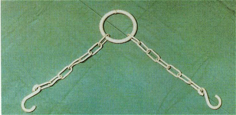
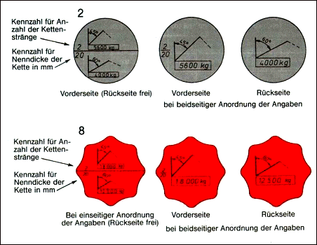
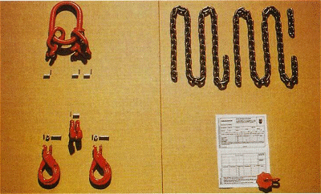

Rundstahlketten entstehen in vielen Formen und Qualitäten durch Widerstandsschweißen der vorgebogenen Kettenglieder in vollautomatischen Schweißmaschinen. Anschließend werden sie wärmebehandelt und automatisch gereckt und dabei geprüft. Nach losweisen Zerreiß- und Biegeproben werden geprüfte Rundstahlketten meterweise gestempelt.
Die Teilung ist die innere Länge eines Kettengliedes. Nur Ketten mit einer Teilung, die nicht größer ist als das Dreifache des Kettenglied-Durchmessers, dürfen zum Heben von Lasten verwendet werden.
Dies hat folgenden Grund:
Ein um die rechtwinklige Kante gelegtes Kettenglied wird durch die Nachbarglieder abgestützt. Die Kette kann dann an der Kante nicht verbogen werden.
In fast jedem Betrieb werden auch andere, langgliedrige Ketten verwendet, beispielsweise als Spannketten, Absperrketten oder Zurrketten.
Diese Ketten dürfen nicht als Anschlagketten verwendet werden (Bild 11-1).
Beim Hin- und Herbiegen könnten sie brechen. Gleiches gilt auch für Motoraushebeketten.

Bild 11-1: Eine langgliedrige Kette darf selbst im Neuzustand nicht als Anschlagmittel verwendet werden. Die Kettenglieder verbiegen!
Durch unterschiedliche Stahlfestigkeit ergeben sich starke Unterschiede der Tragfähigkeit und der Einsatzmöglichkeit bei tiefen und hohen Temperaturen (Bild 11-2).
Die Tragfähigkeit einer 10-mm-Kette der Güteklasse 2 beträgt im Einzelstrang 1000 kg. Eine Kette der Güteklasse 4 hat bei gleichen Bedingungen bereits 1600 kg Tragfähigkeit. Demgegenüber trägt eine Kette der Güteklasse 8 bei 10-mm-Kettendicke sogar 3150 kg. Die Tragfähigkeit der Anschlagketten-Güteklassen 8, 10 und 12 bezieht sich auf die normale Benutzung der Anschlagketten an wechselnden Arbeitsplätzen. Die Typprüfungen der Zubehörteile der Güteklasse 8, aber auch der Ketten der Güteklassen 10 (siehe PAS 1061) und 12 werden mit dem 1,5-fachen der Tragfähigkeit durchgeführt. 20 000 Lastwechsel müssen ohne Bruch ertragen werden können.
Bei teil- oder vollautomatischem Betrieb, insbesondere bei Mehrschichtbetrieb oder mit Lasten von 75 bis 100 % der Volllast:
Tragfähigkeit deutlich reduzieren oder aber vom Hersteller speziell für die Krananlage die Tragfähigkeit oder den Austauschzyklus, z. B. ein Quartal, berechnen lassen!
Güteklasse |
Tragfähigkeit in % bei Kettentemperatur von °C | |||||||||
| unter -20 bis -40 |
unter -10 bis -20 |
unter 0 bis -10 |
von 0 bis 100 |
über 100 bis 150 |
über 150 bis 200 |
über 200 bis 250 |
über 250 bis 300 |
über 300 bis 400 |
über 400 bis 475 |
|
| 2 | 0 | 50 | 75 | 100 | 75 | 50 | 30 | 0 | 0 | 0 |
| 4 | 100 | 100 | 100 | 100 | 100 | 100 | 100 | 100 | 75 | 50 |
| 8 | 100 | 100 | 100 | 100 | 100 | 100 | 90 | 90 | 75 | 0 |
Bild 11-2: Tragfähigkeit in Abhängigkeit von den Kettentemperaturen
Die Güteklassen der Ketten sind durch Kettenanhänger, die sich in Form und Farbe unterscheiden, gekennzeichnet (Bild 11-3). Die runden Kettenanhänger gelten für Güteklasse 2, ansonsten zeigt die Anzahl der Ecken des Kettenanhängers die Güteklasse an. Die achteckigen Anhänger der Ketten der Güteklasse 8 sind üblicherweise rot.
Wenn der Anhänger fehlt, muss die Tragfähigkeit der Kette entsprechend der Güteklasse 2 reduziert werden. Weil jeder Meter dieser Ketten einen Prüfstempel trägt und zusätzlich die Güteklasse eingeprägt ist, kann eine befähigte Person (ehemals Sachkundiger) jedoch in der Kettenwerkstatt den Kettenanhänger nachrüsten.
Die Bruchdehnung von Anschlagketten muss mindestens 20% betragen.
Eine hohe Dehnung der Anschlagkette macht es jedem Anschläger deutlich, dass die Kette überlastet worden ist. Deshalb dürfen nie abgelegte Hebezeugketten, die ja nur eine Bruchdehnung von 5 bis 15% aufweisen, als Anschlagketten weiter verwendet werden.

Bild 11-3: Kettenanhänger nach DIN 685
Geschweißte Anschlagketten aus Ketten der Güteklasse 2 werden heute noch aus folgenden technischen Gründen hergestellt und verwendet:
Ketten der Güteklasse 8 würden im Beizbad durch den in den Stahl hineinwandernden Wasserstoff verspröden und beim kleinsten Stoß oder Schlag spröde brechen.
In Beizbädern dürfen Ketten deshalb nur verwendet werden, wenn sie aus Sonderlegierungen bestehen oder der Güteklasse 2 – der Normalgüte – entsprechen, siehe BG-Regel „Rundstahlketten als Anschlagmittel in Feuerverzinkereien“ (BGR 150).
Eine zusätzliche Alternative ergibt sich durch geschweißte Anschlagketten Güteklasse 4 nach DIN EN 818 Teil 5.
Montierte Anschlagketten werden aus Meterketten und geschmiedeten, geprüften Einzelteilen nach DIN EN 1677 „Einzelteile für Anschlagmittel, Sicherheit; Teil 1: Geschmiedete Einzelteile, Güteklasse 8“ zusammengebaut (Bild 11-4). Montierte Einzelteile, wie Kettenverbindungsglieder, Haken, Kettenverkürzungsklauen, müssen der Güteklasse 8 entsprechen. Sie sind meist rot gekennzeichnet, falls sie nicht Zinkgrundierung tragen oder galvanisch verzinkt wurden. Jedes Einzelteil trägt den -Stempel nach DIN 685 Teil 1 bis 5 „Geprüfte Rundstahlketten“ und als Kennziffer die Nenndicke der dazugehörigen Kette Güteklasse 8 nach DIN EN 818-2 "Kurzgliedrige Rundstahlketten für Hebezwecke, Sicherheit; Teil 2: Mitteltolerierte Rundstahlketten für Anschlagketten, Güteklasse 8". Die Kennzeichnung 10 8 heißt also:
Für 10-mm-Kette nach DIN EN 818-4. Entsprechend gibt der rote Achteckanhänger bei der einsträngigen Kette 3,15 t Tragfähigkeit an.
Deshalb:
| Meterketten | nach DIN EN 818 Teil 2 |
| + Ketteneinzelteile | nach DIN EN 1677 |
| ______________________________________________ | |
| = Anschlagkette |
nach DIN EN 818 Teil 4 (Güteklasse 8) |

Bild 11-4: Aus diesen Bestandteilen entsteht eine Anschlagkette im Baukastensystem
Für die Güteklasse 8 gibt es Bauteilserien, die eine eindeutige Zuordnung von Ketten-Nenndicke und Bauteil mit gleicher Tragfähigkeit gewährleisten. Die Öffnung am Bauteil ist zu schmal für eine zu dicke Kette, der Bolzen zu dick für eine zu dünne Kette.
Die Kettenverbindungsglieder sind als Universalverbindungsglieder so gestaltet, dass auch andere Teile als Ketten miteinander verbunden werden können, beispielsweise Ösenhaken nach DIN EN 1677 Teil 2 oder 3, Sicherheitshebeklemmen oder Kettenverkürzungselemente.
Kettenverkürzer gibt es in unterschiedlichen Bauarten, einige mit Gabelkopf für das erste Glied des zu verkürzenden Kettenstranges. Die mitgelieferten Benutzungshinweise sind bekannt zu machen, insbesondere wenn der tragende Strang falsch herum eingelegt werden kann.
Damit „montierte Anschlagketten“ richtig montiert werden und auch die zugehörigen Anhänger mit CE-Kennzeichnung bekommen, gibt es drei Möglichkeiten:
Bei Einsatz in Beizereien oder Verzinkereien oder anderen Korrosionsangriffen dürfen diese Ketten mit Verbindungselementen nicht verwendet werden, weil sich die Säure in den Fugen festsetzt und dort unsichtbar sowohl den Bolzen als auch die Halteelemente zerfrisst oder das Zink die Beweglichkeit verhindert.
Für diese besonderen Einsatzzwecke sind nur die bereits beschriebenen geschweißten Rundstahlketten der Güteklasse 2 oder 4 oder Ketten aus Reineisen einsetzbar.
Ketten höherer Güteklassen
Ketten und Einzelteile der Güteklassen 10 und 12 sind herstellerbezogen gefärbt und sollen — schon wegen der Maßabweichungen (Schlitzbreite, Ketteninnenmaß und Bolzendicke) — und der Typprüfung nur mit Teilen desselben Herstellers kombiniert werden. Auch aus Produkthaftpflichtgründen kann es keine andere Lösung geben. Sie dürfen entsprechend den Herstellerangaben auf dem Sonderanhänger belastet werden.